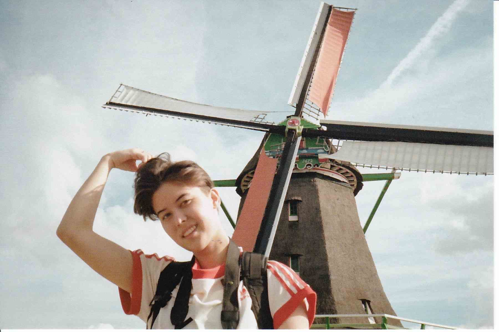

✌️ Howdy, I'm Sen (they/them)
I'm a digital experience designer, multidiscilpinary artist, and a recent graduate of the Cognitive Systems program at the University of British Columbia.
With a concentration in Computer Science and Psychology, my focus at UBC was in human-computer interaction, computational design, and research into human brain systems underlying perception, attention, memory, and decision-making. I came into design via a melding of these interests, motivated by the desire to transform theoretical learnings into tangible solutions.
For fun, I like making short films, fawning over modular synths, going on long runs, and drawing mini comics for my friends.
